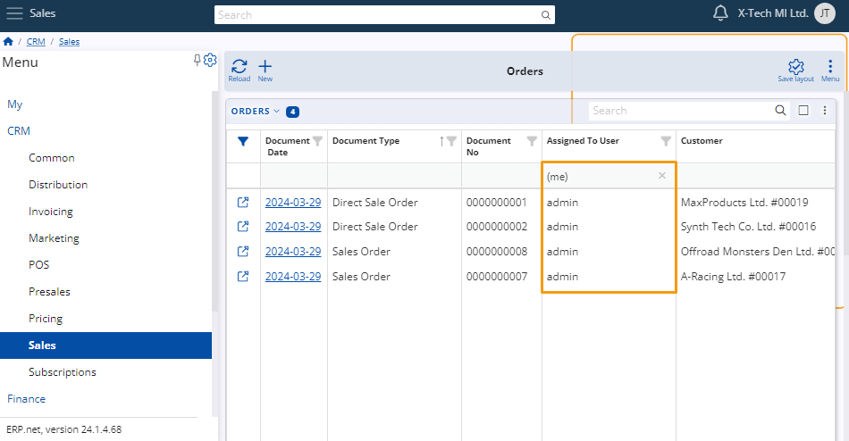
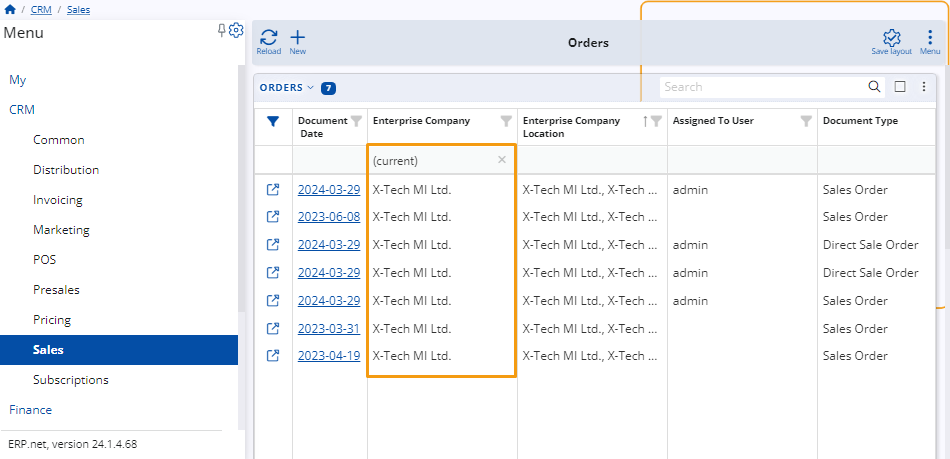
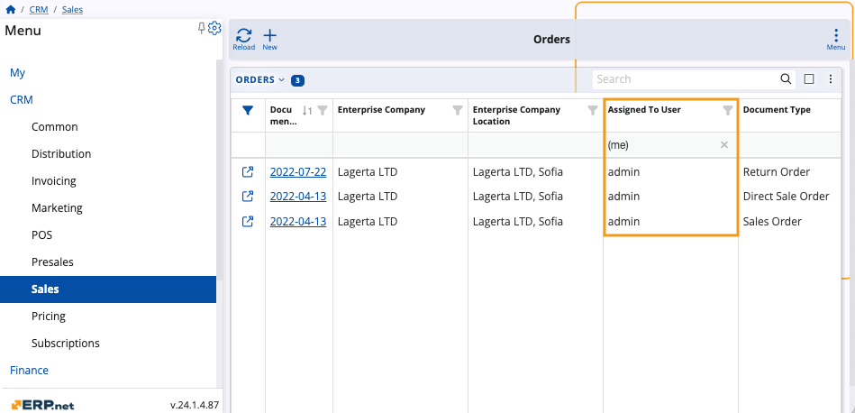
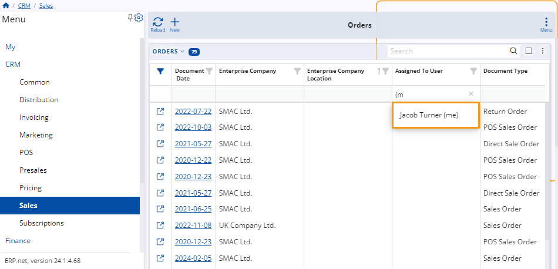
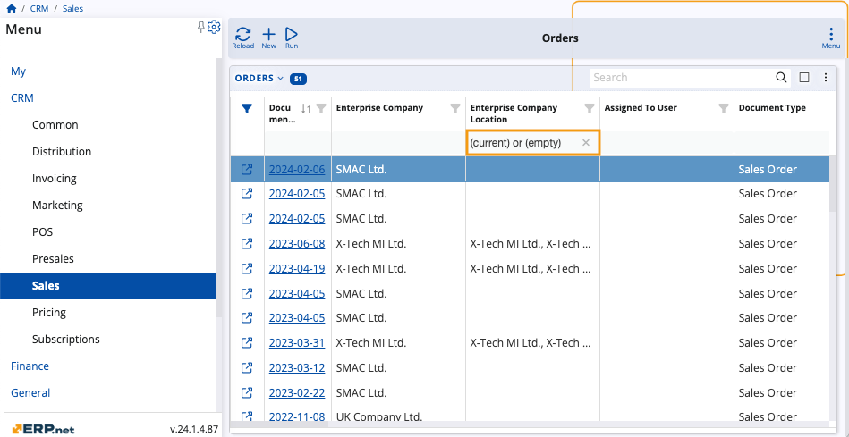
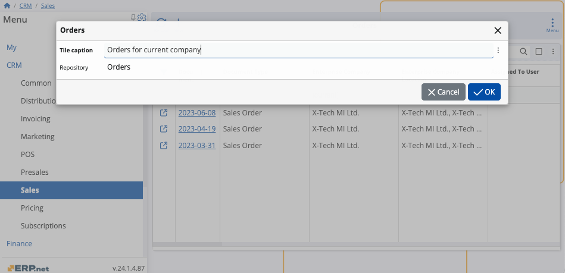

How to filter by (me), (current), and (empty)
You can use filtering expressions for applicable attributes to narrow down the scope of what is displayed in a particular navigator.
They are specified in the filter row found under some columns of the respective navigator as well as in the Advanced filter panel using the contains operator.
If the filtering row is not visible, you can enable it through the panel's menu or by clicking on the filter icon on the far-left of the columns.
Example:
Within the Orders panel of the Sales module, you input "(me)" in the filtering row of the Assigned To User column.
This results in only documents assigned to you to be displayed in the table.

Rules and syntax
Filtering expressions follow a fixed syntax that can influence the outcome they produce.
It's therefore crucial to write them down exactly as they are if you want to achieve the desired effect.
Note
You can apply more than one filtering expressions at a time.
This way, your navigator could visualize items that are related to your current user and also associated with your current enterprise company and its location.
(current)
This expression enables you to conveniently locate documents related to your current enterprise company, its location, or a role.
Example:
Input "(current)" into the filtering row of the Enterprise Company column.
Only items associated with the company you're currently logged in with, will be displayed in the table.

(empty)
This expression can be inserted into all fields that support the "equals" and "contains" operators.
It works as a Null filter, making a navigator reveal items that do not contain data for the column in which (empty) is applied.
Example:
Input "(empty)" into the filtering row of the Enterprise Company Location column.
Only items that do not have an enterprise company location will be displayed in the table.

(me)
This expression enables you to locate only the documents related to the user you are currently logged in as, eliminating the need to search for your own username in a field's dropdown list.
It can be applied to all fields referring to the Systems.Security.Users Entity.
Example:
Input "(me)" into the filtering row of the Assigned To User column.
Only items assigned to the user you're logged in as will be displayed in the table.

Note
When you input expressions in filtering row, popup suggestions will appear to speed up the writing process.

(me) or (empty)
It's possible to apply the (me) and (empty) expressions separated by an "or" operator in the same filtering row.
As a result, the navigator will display items that meet either of these conditions.
Example:
Input "(me) or (empty)" into the filtering row of the Assigned To User column.
Unassigned items as well as items assigned to the user you're logged in as will be displayed in the table.

(current) or (empty)
Similarly, you can apply the (current) and (empty) expressions within the same filtering row, again separated by an "or" operator.
Example:
Input "(current) or (empty)" into the filtering row of the Enterprise Company Location column.
Items not related to an enterprise company location as well as those associated with the current one will be displayed in the table.

Using tiles with filtering expressions
When you apply one or more expressions to a navigator, you can create a tile for it in order to save its current filtering configuration.
Note
If you access a filtered navigator through a tile, data will always be adjusted to match that of the respective logged in user, their current company and location, or the role they are assigned at the moment.
When a navigator filtered by (me) is accessed through a tile, for instance, it will always display records relevant to the currently logged-in user.
Example:
Filter a sales order navigator to display only the documents related to the current enterprise company.
Then, create a tile for it, naming it “Orders for current company”.

When you save your tile, you will be able to access it from within the Tiles app in the My module, or directly from the respective navigator if it's integrated as a panel.